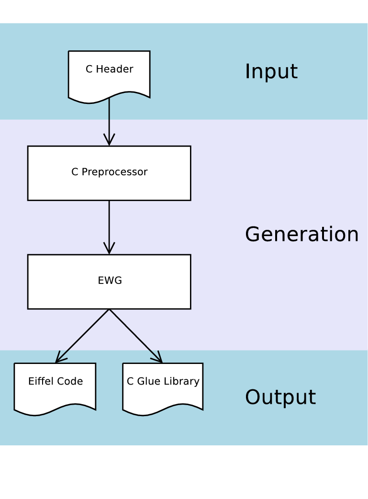
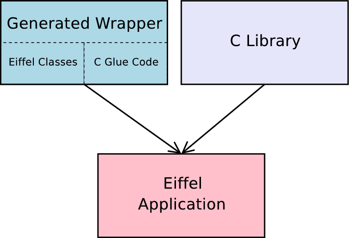
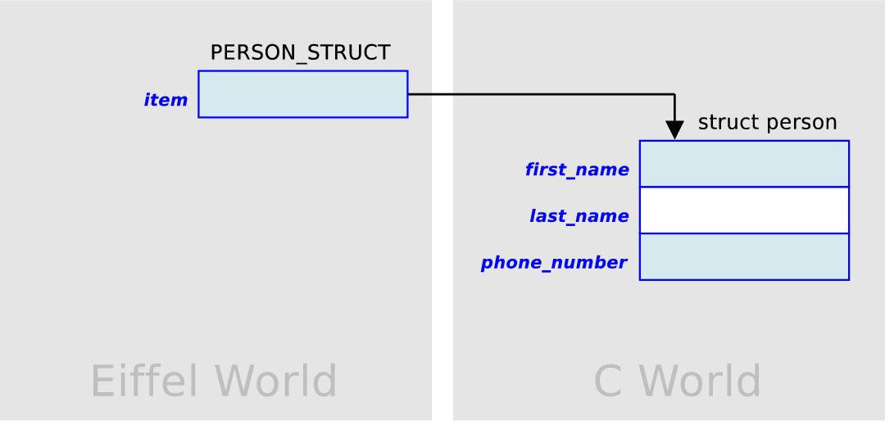
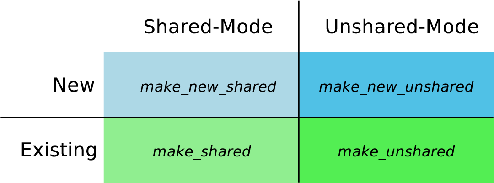

Understanding Ewg Understanding EWG |
This chapter describes what code EWG generates and how to integrate that code into a automated build system.
The ewg tool is a command line application and takes the following command line parameters:
ewg [--version] [--verbose]
[--enable-msc-extensions | --disable-msc-extension] [--output-dir=<...>]
--cpp-full-header=<...> [--include-header=<...>] [--config=<...>]
You can use ewg directly to see what it produces on a header of your own without setting up a complete project, or use your own build process. Most of the time you will not use the ewg tool directly, but use it indirectly through geant.
As shown in the next figure, EWG takes an already preprocessed C header file and generates Eiffel classes and a C glue code library. The generation of the C glue code library might seem a little counter productive at first, since we really want to use Eiffel not C. But first of all this generated C code makes accessing the C library from Eiffel possible (at least for some constructs) and second of all this generated C code is wrapped by the generated Eiffel classes as well, eliminating the need to deal with it directly.

The above figure omits one detail, EWG doesn't generate the C glue code library, but rather the C source code files that will have to be compiled and linked (via geant for example) into a library.
An application that uses the EWG wrapper uses the generated Eiffel Classes and links against the generated glue code library as well as to the C library.

How exactly the application has to be linked is topic of the next chapter.
EWG creates a whole directory structure containing generated source code.
You will see that some of the generated files have the file name extension ge. Those classes contain macros and need to be preprocessed by gepp. As you will see later out of one such a .ge file 4 Eiffel class files will be created, one for each Eiffel compiler.
The following shows the directory structure generated by EWG
As you can see there are low-level and higher level wrappers. For a library to become usable for application developers you have to provide a third layer that uses the lower layers, but provides a consistent object oriented interface.
This section describes what code gets generated for a C function declaration and how to use that code to call the declared function.
Let us look at the following function declaration (taken from the simple-example)
int func2 (int a, int b);
func2 is a function that takes two parameters of type int and returns a value of type int. EWG generates an Eiffel wrapper class for it in the cluster eiffel\external\function:
class SIMPLE_HEADER_FUNCTIONS_EXTERNAL
feature
func2_external (a: INTEGER; b: INTEGER) : INTEGER
get_func2_pointer_external: POINTER
end
The name of the class is SIMPLE_HEADER_FUNCTIONS_EXTERNAL. This is because the function declaration comes from the C header file simple_header.h. EWG will put all function declarations from the same header in the same class.
func2_external is the routine you will want to call if you want to execute the c function func2. get_func2_pointer_external gives you the address of the C function. You need the address of an function if you want to pass it as a callback for example.
For functions only low-level wrappers are generated.
This section describes what code gets generated for a C struct declaration and how to use that code to create, free, read from and write to a struct.
Let us look at the following struct declaration:
struct foo
{
int a;
};
For structs EWG generates low-level and high-level wrappers. The low level wrappers are purely procedural but still provide full access to C structs. The high level wrappers use the low level wrappers to provide object oriented access. Lets have a look at the generated low level wrapper for struct foo first:
class FOO_STRUCT_EXTERNAL
feature {NONE} -- Implementation
sizeof_external: INTEGER
get_a_external (item: POINTER): INTEGER
set_a_external (a_item: POINTER; a_value: INTEGER)
end
To use this wrapper directly (although this is not recommended) inherit from FOO_STRUCT_EXTERNAL. To create or free a struct one can use the malloc and free functions from the EWG runtime library. But to create (malloc) a struct I need to know how big it is, well thats what FOO_STRUCT_EXTERNAL.sizeof_external is for. The return value of malloc will be a POINTER. This is the reference to my newly created struct. To set member a to 3 one can write
set_a_external (pointer, 3)
To read member a, write
i := get_a_external (pointer)
As you can see the first parameter here is always a pointer to the struct.
As hinted in the previous section, the low level wrappers are not meant to be used directly. They give you a complete, but purely imperative API to deal with structs. The high level struct wrappers on the other hand provide an object oriented way to handle structs. The idea is that every struct you use from within Eiffel has a counterpart, the wrapper object. For every struct that EWG parses it generates the corresponding wrapper class. Every struct wrapper class inherits from EWG_STRUCT which is a deferred class with the following interface:
deferred class interface EWG_STRUCT
feature(s) from EWG_STRUCT -- Access
item: POINTER
require
exists: exists
ensure
item_not_default_pointer: Result /= default_pointer
sizeof: INTEGER
-- Size of the struct in bytes
-- This needs to be redefined by the
-- descendant.
is_shared: BOOLEAN
-- Is the contents of `item' referenced by other C or Eiffel code?
-- If `is_shared' is `True' then when the current object will be
-- collected by the garbage collector, the wrapped struct will
-- also be freed.
-- This is a good idea, only if you can be sure that when the
-- Eiffel object gets collected, the C side does not have a reference
-- to the wrapped struct anymore.
require
exists: exists
exists: BOOLEAN
-- Does `item' point to a valid C struct ?
invariant
managed_data_not_void: managed_data /= Void;
managed_capacity_equals_sizeof: exists implies managed_data.capacity = sizeof;
end of deferred EWG_STRUCT
As you can see the interface offers you direct access to the wrapped struct through the item query. sizeof tells you how many bytes the struct value occupies. With exits you can check if this wrapper is attached to a valid (non NULL) struct value. The boolean query is_shared tells you whether the memory occupied by the wrapped struct value will be freed when the wrapper object gets collected or not. You decide whether a struct wrapper is shared or not by using a corresponding creation routine (Obviously the ones with shared in its name create shared struct wrapper and the ones with unshared create ones who are not) Every struct wrapper has the same creation routines. You can see them in the interface of FOO_STRUCT, the high level wrapper class for struct foo:
class interface FOO_STRUCT
creation
make_new_unshared
-- Create a new pointer wrapper to a new struct.
-- Allocates as much new memory as the struct needs.
-- 'unshared' means if the Current object
-- gets collected by the garbage collector,
-- the memory allocated for the struct will
-- be freed as well.
ensure
exists: exists;
is_not_shared: not is_shared
make_new_shared
-- Create a new pointer wrapper to a new struct.
-- Allocates as much new memory as the struct needs.
-- 'shared' means if the Current object
-- gets collected by the garbage collector,
-- the memory allocated for the struct will
-- not be freed as well.
ensure
exists: exists;
is_shared: is_shared
make_unshared (a_item: POINTER)
-- Create a new pointer wrapper to a given struct.
-- 'unshared' means if the Current object
-- gets collected by the garbage collector,
-- the memory allocated for the struct will
-- be freed as well.
require
a_item_not_default_pointer: a_item /= default_pointer
ensure
exists: exists;
item_set: item = a_item;
is_not_shared: not is_shared
make_shared (a_item: POINTER)
-- Create a new pointer wrapper to a given struct.
-- 'shared' means if the Current object
-- gets collected by the garbage collector,
-- the memory allocated for the struct will
-- not be freed as well.
require
a_item_not_default_pointer: a_item /= default_pointer
ensure
exists: exists;
item_set: item = a_item;
is_shared: is_shared
feature(s) from FOO_STRUCT -- Member Access
a: INTEGER
set_a (a_value: INTEGER)
invariant
managed_data_not_void: managed_data /= Void;
managed_capacity_equals_sizeof: exists implies managed_data.capacity = sizeof;
end of FOO_STRUCT
Every high level struct wrapper class offers four creation routines. Two to create shared wrapper object, and two to create unshared unshared ones. Additionally you can create a wrapper that will attach to an already existing C struct value, or you create a struct wrapper that automatically creates its own struct value to wrap. To create a struct wrapper that automatically creates a new struct value use a creation routine with new in it's name. To create a struct wrapper that attaches to an existing C struct value, use a creation routine that hasn't.
For every member in the C struct, the high level struct wrapper class offers a getter and a setter (Actually some members only have a getter, such as const members). The following code snippet demonstrates how to use the high level struct wrapper class:
test_foo is
local
foo: FOO_STRUCT
do
create foo.make_new_unshared
foo.set_a (10)
print (foo.get_a.out)
end
This section describes what code gets generated for a C enum declaration and how to use that code.
Let us look at the following enum declaration (taken from the simple-example)
typedef enum
{
red,
blue,
green
} colors;
colors is an alias for an anonymous enum. EWG generates an Eiffel wrapper class for it in the cluster eiffel\external\enum:
class interface COLORS_ENUM_EXTERNAL
feature(s) from COLORS_ENUM_EXTERNAL
red: INTEGER
blue: INTEGER
green: INTEGER
end of COLORS_ENUM_EXTERNAL
The name of the class is COLORS_ENUM_EXTERNAL. Since Eiffel does not have the enum concept, enums are mapped as INTEGER constants in Eiffel. Simply inherit from COLORS_ENUM_EXTERNAL wherever you want to use them.
This section describes what code gets generated for C callbacks and how to use that code. Now first of all its not as trivial to define what a callback is. EWG defines callbacks as pointers to functions. Wherever it sees a pointer to a function, it generates a callback wrapper. Of course chances are some pointers to functions are not meant to be callbacks, but in this case we can simply ignore the generated code.
It is important to understand that there is an inherent problem when wrapping callbacks in Eiffel. For example the following callback:
typedef void (*void_callback) (void);
Does not convey any state when invoked (other than it has been invoked). This is the reason for the following limitation: One can only register one Eiffel callback receiver per callback type. If more receivers were allowed how would one decide on the invocation of a callback which receiver is meant? In practice this limitation is usually of no concern. Most C libraries have adopted a pseudo OO technique of supplying a user definable parameter as the first parameter on every callback. This parameter can be used to do further dispatching. Have a look a the GTK or OpenGL examples to see how to do this.
A solution to overcome this limitation using dynamic function generation is being worked on.
Let us look at the following declarations (taken from the callback-example)
typedef void (*sample_callback_type) (void* pdata, int a_event_type); // make `sample_callback_type' receive events. void register_callback (sample_callback_type a_callback, void* pdata); // make all registered callbacks receive an event void trigger_event (int a_event_type);
sample_callback_type is the actual callback. register_callback is used to register a given callback receiver, so that it gets called whenever one calls trigger_event. The two function declarations are wrapped as usual. For sample_callback_type EWG generates two classes. Both are located in eiffel\abstraction\callback. Actually EWG generates lower level classes two, even special C code, but these are omitted here. The two classes of interest are SAMPLE_CALLBACK_TYPE_DISPATCHER and SAMPLE_CALLBACK_TYPE_CALLBACK. The first one is the singleton that you have to create in order to establish the C-Eiffel bridge. Use SAMPLE_CALLBACK_TYPE_DISPATCHER.c_dispatcher whenever you need to provide the C side with a pointer to the callback receiver. The creation routine of SAMPLE_CALLBACK_TYPE_DISPATCHER expects an object of type SAMPLE_CALLBACK_TYPE_CALLBACK. Create your own callback receiver class let it inherit from SAMPLE_CALLBACK_TYPE_DISPATCHER and use an object of your new class for the creation routine argument. Here are the interfaces of the generated classes:
class interface SAMPLE_CALLBACK_TYPE_DISPATCHER
create
make (a_callback: SAMPLE_CALLBACK_TYPE_CALLBACK)
require
a_callback_not_void: a_callback /= Void
feature(s) from SAMPLE_CALLBACK_TYPE_DISPATCHER
callback: SAMPLE_CALLBACK_TYPE_CALLBACK
c_dispatcher: POINTER
invariant
callback_not_void: callback /= Void;
end of SAMPLE_CALLBACK_TYPE_DISPATCHER
deferred class interface SAMPLE_CALLBACK_TYPE_CALLBACK
feature(s) {SAMPLE_CALLBACK_TYPE_DISPATCHER} from SAMPLE_CALLBACK_TYPE_CALLBACK
on_callback (a_pdata: POINTER; a_a_event_type: INTEGER)
end of deferred SAMPLE_CALLBACK_TYPE_CALLBACK
Assuming that you have created a class MY_CALLBACK_RECEIVER which inherits from SAMPLE_CALLBACK_TYPE_CALLBACK, the following code demonstrates the use of callbacks
feature
make is
do
-- Establish the C<->Eiffel bridge.
-- From now on, whenever `trigger_event_external' gets called
-- `MY_CALLBACK_RECEIVER.on_callback' gets called too.
register_callback_external (dispatcher.c_dispatcher)
end
dispatcher: SAMPLE_CALLBACK_TYPE_DISPATCHER is
local
my_callback_receiver: MY_CALLBACK_RECEIVER
once
create my_callback_receiver.make
create Result.make (my_callback_receiver)
end
trigger is
do
trigger_event_external
-- `MY_CALLBACK_RECEIVER.on_callback' has now been called
end
Although EWG can be used without the GOBO tools geant and gexace it is highly recommended to use them. EWG comes with reusable geant-scripts that help you create a cross-eiffel-compiler, cross-c-compiler and cross-platform automated build process.
A good way to get started with the build process is to go to the simple or callback example and run geant with the --verbose option.
TODO: Documentation for build process
EWG comes with a set of classes that help you deal with external C code in a generic and portable way. You can find those classes in the directory ${EWG}/library/runtime. If you want to distribute a wrapper generated by EWG, you don't need to provide the full EWG package alongside. The runtime library and the ${EWG}/misc directory are sufficient.
This cluster provides a generic way to deal with:
EWG provides a class called EWG_MANAGED_POINTER (it is very similar and actually inspired by ISEs MANAGED_POINTER class). This class encapsulates C memory areas on a higher level than the kernel class POINTER. TODO: continue
It is important to know that instances of C structs, unions or really any C memory area are by default not first class Eiffel objects. Instead EWG creates classes who's instances can serve as companion objects. For example let's look at the following struct:
struct person
{
char* first_name;
char* last_name;
char* phone_number;
};
For this struct EWG will create a class EWG_PERSON_STRUCT_EXTERNAL, which provides low level and non-object-oriented access to the struct. EWG will also create a class called EWG_PERSON_STRUCT which uses the former class to provide the companion objects. In the next figure you can see how the relate.

The Eiffel wrapper object really only stores a reference (item) to the C struct instance. When you invoke person.first_name, where person is of type PERSON_STRUCT then the actual data will be retrieved from the C struct instance being referenced via item.
Wrappers based on pointers (EWG_MANAGED_POINTER, EWG_STRUCT and EWG_UNION) can be created to be shared or unshared, new or existing via one of the following creation procedures:

TODO: Further documentation for runtime library
To customize the way EWG generates wrappers, you can provide a configuration file. This file usually named config.ewg is written in XML. This section will describe it's structure.
Configuration support is quite new many very interesting things have not yet been implemented. Basically all you can do so far is control what from a header should be wrapped and what not.
Here is a simple example of how a config file can look like:
<?xml version="1.0"?>
<ewg_config name="my_example">
<rule_list>
<!-- This rule matches all C constructs who are named "foo". -->
<!-- Matching constructs will be wrapped using EWGs defaults -->
<rule>
<match>
<identifier name="foo"/>
</match>
<wrapper type="default">
</wrapper>
</rule>
<!-- This rule matches all C constructs. -->
<!-- Matching constructs will be ignored. -->
<!-- Thus no wrapper will be generated for them -->
<rule>
<match>
</match>
<wrapper type="none">
</wrapper>
</rule>
</rule_list>
</ewg_config>
The concept used is very similar to the concept used in XSLT. You have a ordered list of rules. For every parsed C construct EWG will go through the list of rules and use the first rule that matches on the construct. If no rule matches the construct will be ignored.
Each rule consists of two parts:
If the match element is empty, all constructs match, but you can use sub-elements to constrain what constructs should match:
<?xml version="1.0"?> <match> <header name=".*foo.h"/> </match>
Note that the value of name can be a regular expression. In the above example any header that ends with foo.h will match.
<?xml version="1.0"?>
<match>
<identifier name="foo"/>
</match>
Note that the value of name can be a regular expression.
<?xml version="1.0"?>
<match>
<type name="function"/>
</match>
Possible values for name are
You can choose more than one constraint per match clause. In which case you constrain the match clause to all individual constraints.
If you choose to include a type who depends on a type which you choose to exclude, the dependent type will also be included. Confused? Let's say you have:
struct foo
{
int i;
};
struct bar
{
struct foo* pfoo;
};
And you specify the following config file:
<?xml version="1.0"?> <ewg_config> <rule_list> <rule> <match> <identifier name="bar"/> </match> <wrapper type="default"> </wrapper> </rule> <rule> <match> </match> <wrapper type="none"> </wrapper> </rule> </rule_list> </ewg_config>
That would mean, struct bar will be wrapped and struct foo will not be wrapped. Now, because struct bar depends on struct foo, struct bar will be wrapped after all.
In the if you use ewg_library.eant based geant files, you can control whether ewg uses a config file via the ewg.use_config_file variable. Have a look at the GTK, SDL, OpenGL or BerkeleyDB examples to see how it is done. If you set this variable, the config file is expected to be named config.ewg.
|
Copyright © 2004-2005, Andreas Leitner mailto:aleitner@raboof.at http://ewg.sourceforge.net Last Updated: 8 March 2005 |